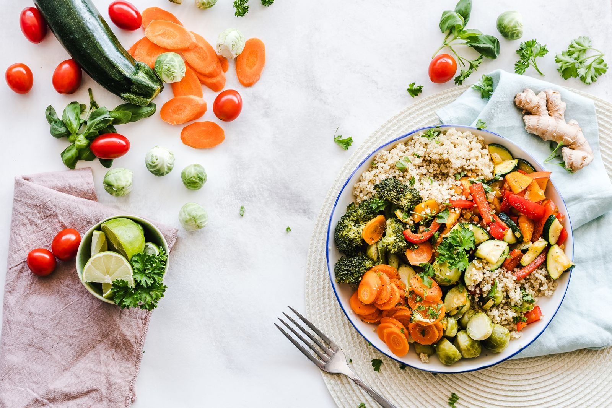

Cansaço e fadiga
Acordar sem energia e sentir que as tarefas de sempre estão exigindo mais de você.
Jornada Além dos Sintomas
Com a Dra. Elizete Kaffer
Instituto Shalon
Quarta-feira, 16 de setembroÀs 19h de Brasília · Aula online
Entenda quais sinais merecem atenção e por que investigar os possíveis fatores por trás do que você sente.
R$ 69 · Aula ao vivo + e-book digital incluído

Isso tem feito parte dos seus dias?
Acordar sem energia e sentir que as tarefas de sempre estão exigindo mais de você.
Intestino preso, gases ou inchaço que incomodam e já parecem fazer parte da rotina.
Perceber mais fios na escova ou mudanças no cabelo e não entender o que está acontecendo.
Dormir mal ou começar o dia com a sensação de que o descanso não foi suficiente.
É fácil colocar tudo na conta da correria. Esses sinais podem ter diferentes causas e merecem ser considerados junto da sua história.
O que você vai aprender
Explicações simples e exemplos do dia a dia para você reconhecer o que observar e quais perguntas levar à sua próxima consulta.
Como observar o cansaço, a queda de cabelo, as alterações intestinais e o sono: quando começaram, com que frequência aparecem e como afetam sua vida.
Por que investigar envolve conhecer sua história e sua rotina. Mudanças no cabelo, na pele e nas unhas também podem fazer parte dessa conversa, dentro do contexto de cada pessoa.

Compreender o papel do sono, da alimentação e dos hábitos no funcionamento do organismo e reconhecer quando buscar uma avaliação individual.
Para quem quer entender o que sente.
E para quem quer começar a se cuidar melhor.
Seu conhecimento continua depois da aula
Na aula, você acompanha a explicação da Dra. Elizete. Com o e-book, tem uma leitura de apoio para retomar os temas e organizar as dúvidas que quer levar à equipe.
Restaurando o Equilíbrio do Organismo
Leitura complementar. O uso de produtos, restrições alimentares e orientações para o seu caso dependem de avaliação profissional.
Veja tudo o que está incluído no ingressoQuem conduz esse olhar
Médica · CRM-SP 87753 · RQE 28721
À frente do Instituto Shalon, a Dra. Elizete traz uma forma próxima e didática de conversar sobre saúde: ouvir a pessoa, conhecer sua história e investigar o que pode estar contribuindo para suas queixas.
Nesta aula, ela compartilha esse olhar com você. Conhecimento médico explicado de forma simples, conectado ao que acontece na vida real.
Jornada Além dos Sintomas
Quarta-feira, 16 de setembro, às 19h de Brasília.
Aula com a Dra. Elizete + e-book da Saúde Shalon, em uma única inscrição.
Faça a inscrição pelo checkout da Hubla.
O acesso é liberado após a confirmação do pagamento.
Receba no grupo o link fechado e as orientações para a aula.
Com a Dra. Elizete Kaffer
Pagamento pela Hubla.
O ingresso inclui a aula, o e-book digital e o grupo de avisos. Consultas, exames e programas de acompanhamento são contratados separadamente.
Antes de participar
Não. A aula é para quem quer entender melhor os temas apresentados e cuidar da saúde com mais consciência.
Não. A Dra. Elizete vai explicar os temas de forma simples, com exemplos do dia a dia.
A transmissão será online e fechada. Após a confirmação do pagamento, você recebe acesso ao grupo. A equipe enviará por lá o link e as orientações para a aula de quarta-feira, 16/09, às 19h, no horário de Brasília.
Sim. A inscrição inclui a aula ao vivo e o e-book digital “A Jornada da Desintoxicação: Restaurando o Equilíbrio do Organismo”, da Saúde Shalon, sem cobrança adicional pelo material. Ele serve como leitura complementar para consultar os temas e conversar com a equipe; não substitui avaliação individual.
O ingresso de R$ 69 inclui a aula, o e-book digital e o grupo de avisos. Consultas, exames e programas de acompanhamento são serviços separados.
A Jornada é educativa e ajuda a compreender os temas apresentados. Diagnósticos, tratamentos e orientações individuais dependem de avaliação profissional.